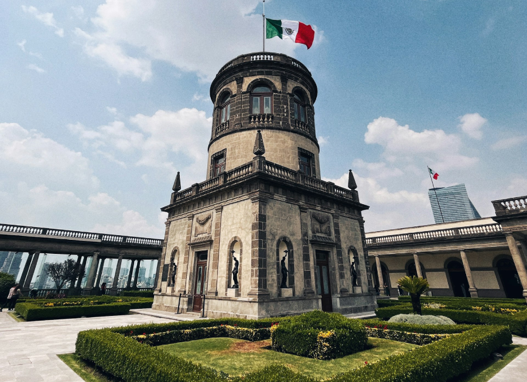
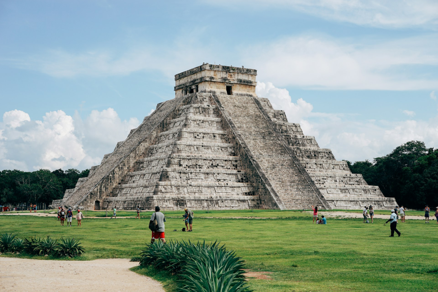
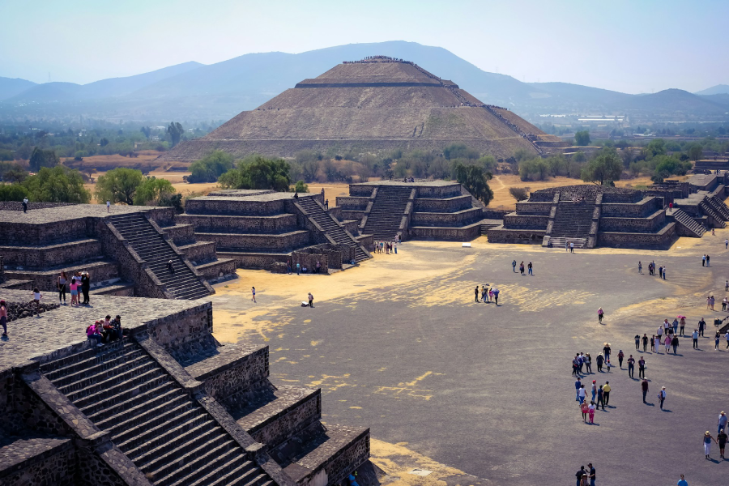

México — Pontos Turísticos
Galeria de fotos do México
Seis lugares para conhecer a história, a arquitetura e as paisagens do México.
Cancúm
Mar límpido e transparente.

Chapultepec
Construções imponentes do México

Chichem Itza
Monumentos para conhecer um pouco da história da humanidade.

Explore o México
As paisagens são paradisíacas.
Castelo de Chapultepec
Imponente castelo
Pirâmides de Teotihuacan
As pirâmides são um mistério em toda a humanidade.